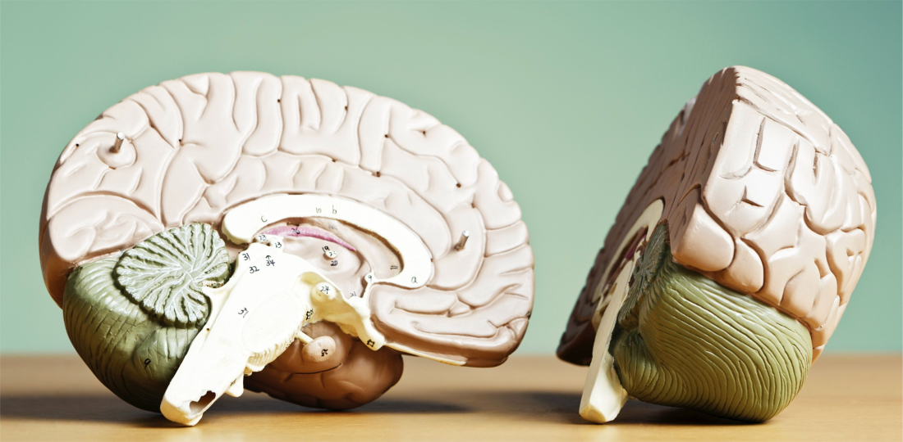
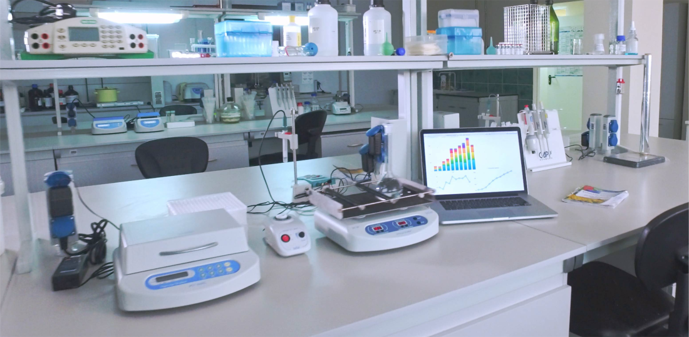

Experience
This page highlights my work experience, internships, and professional development.

Mental Health Advocacy and Research

Perfusion

This page highlights my work experience, internships, and professional development.

